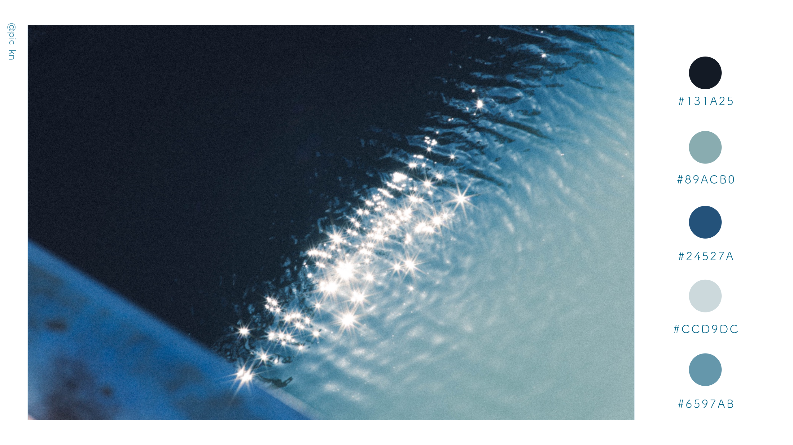
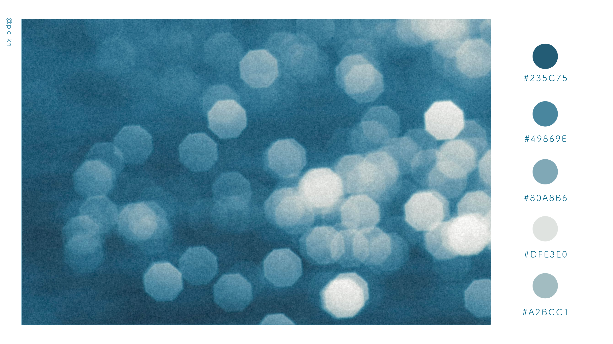
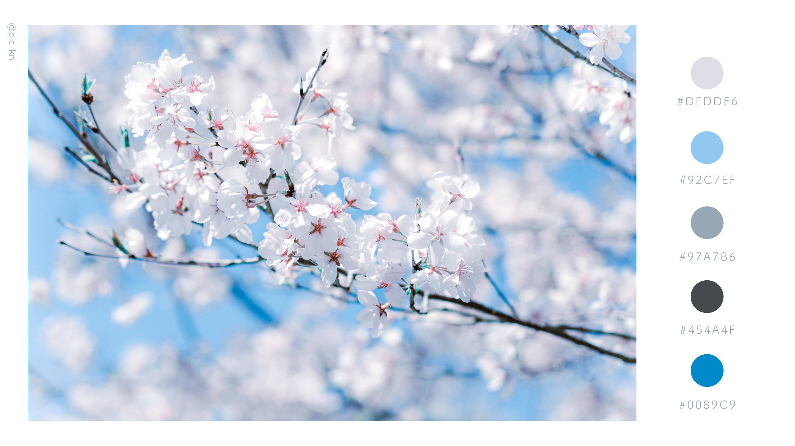
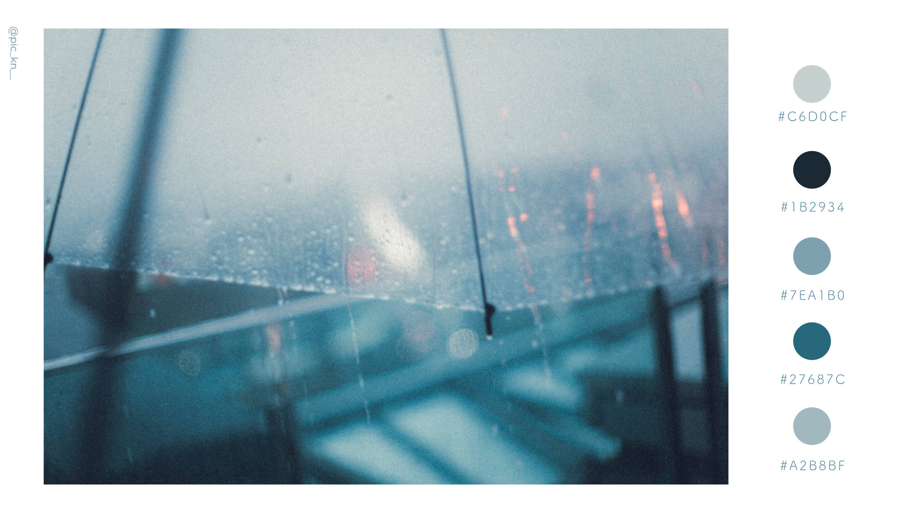
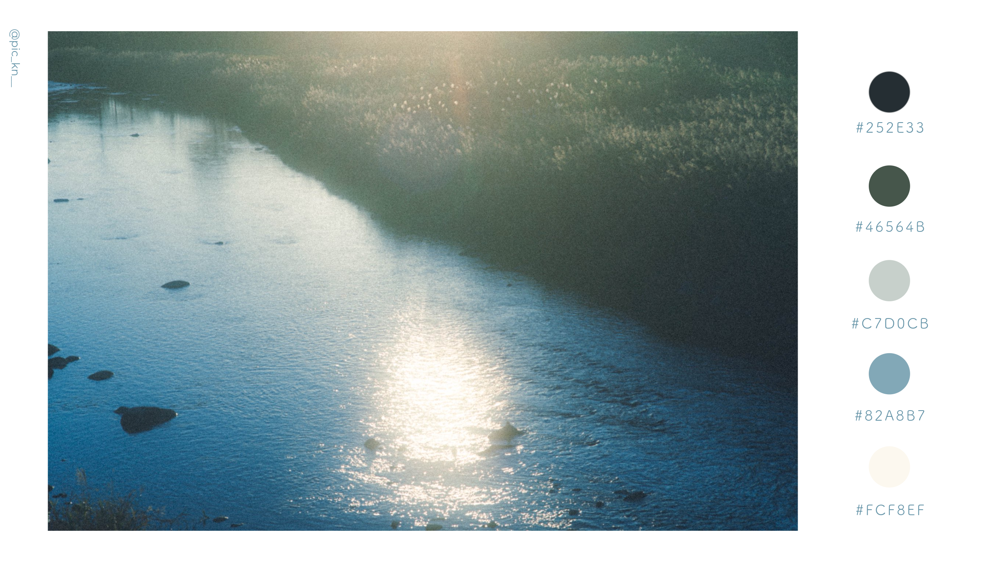

写真から、5色を記録する。





タップして画像をアップロード
※ クラウド（iCloud・Google フォトなど）上の写真は事前にデバイスへダウンロードしてから選択してください
0 / 4 枚保存済み
How to use
01
写真を読み込む
プレビュー画面をクリックするか、写真をドラッグ＆ドロップしてください。
02
パレットが生成される
写真から自動的に5色のカラーパレットを抽出します。明度のバランスを考慮して色を選びます。
03
保存してシェア
「画像を保存する」ボタンで書き出し。そのままSNSに投稿できます。
Share
あなたのカラーパレットを見せてください
生成した画像をXまたはInstagramに投稿したら
ぜひ @pic_kn__ にリプライを送ってください。
#みんなのカラーパレット